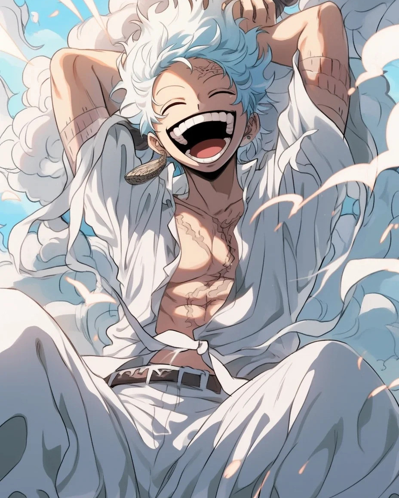
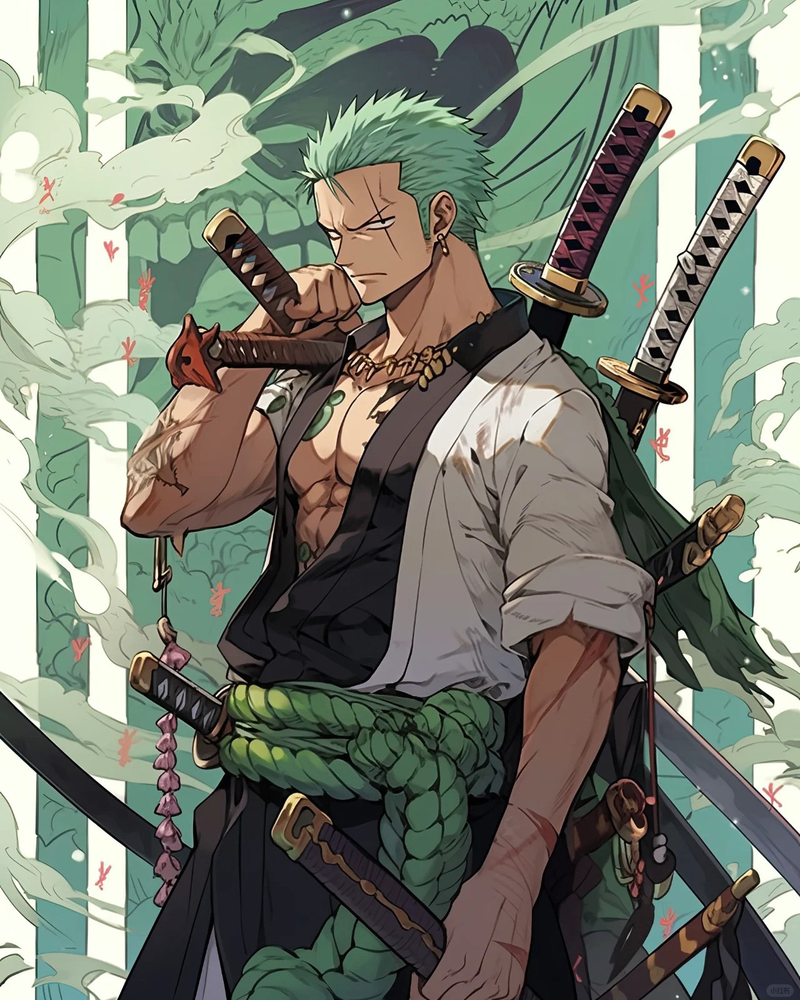
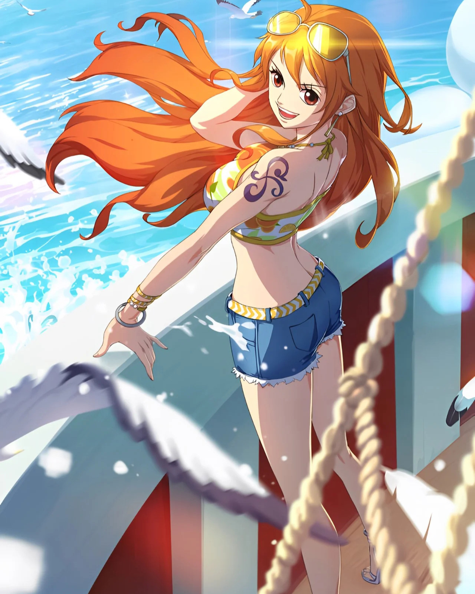
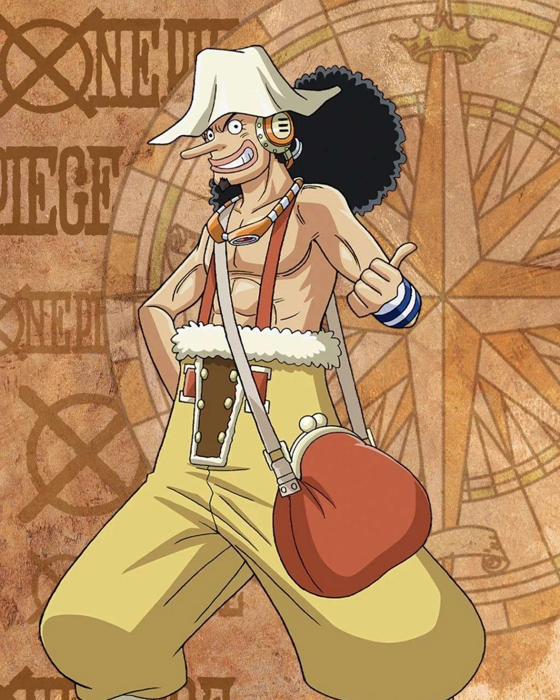
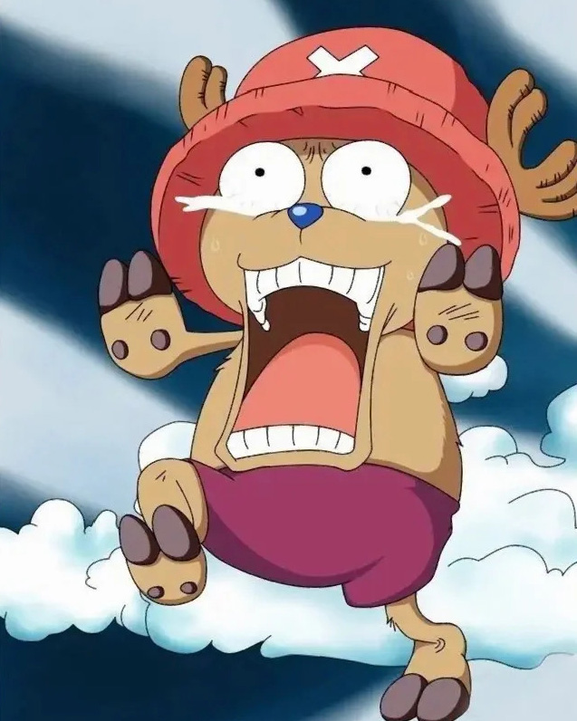
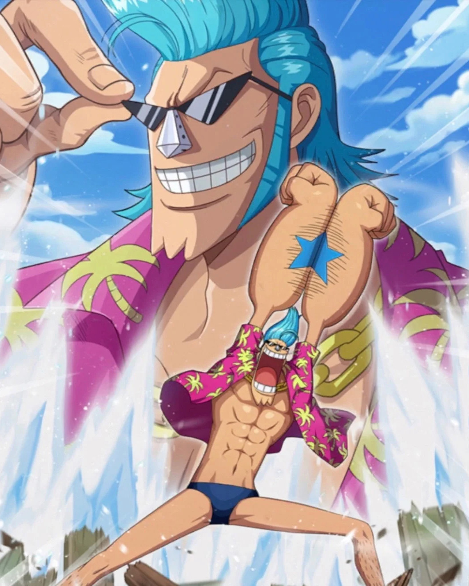

人物列表
-

蒙奇·D·路飞
路飞，全名蒙奇·D·路飞，是日本著名动漫《海贼王》中的主角，一个怀揣着成为海贼王的梦想的少年。他拥有一头标志性的黑色短发，笑起来眼睛弯成月牙状，性格乐观开朗，充满正义感，对待同伴如同家人一般深
-

罗罗诺亚·索隆
索隆，全名罗罗诺亚·索隆，是日本超人气动漫《海贼王》中的重要角色，是草帽海贼团的剑士，被誉为“海贼猎人”。他拥有一头绿色的短发，左眼紧闭，右眼神采奕奕，总是佩戴着三把刀，展现出他那无与伦比的剑
-

娜美
娜美，全名娜美·D·诺琪高（通常简称为娜美），是日本动漫《海贼王》中的核心角色之一，担任草帽海贼团的航海士。她拥有一头橘色的波浪长发，眼睛明亮而充满智慧，性格既机智又勇敢，是团队中不可或缺的灵
-

乌索普
乌索普，全名乌索普·“骗人布”，但通常称为乌索普），是日本动漫《海贼王》中的重要角色，草帽海贼团的狙击手。他拥有一头蓬松的棕色头发，戴着大大的眼镜，性格幽默风趣，喜欢吹牛，但内心深处却隐藏着对
-

乔巴
乔巴，全名托尼托尼·乔巴，是日本动漫《海贼王》中的可爱角色，草帽海贼团的船医。他是一只拥有蓝色鼻子、会说人话、能够直立行走的驯鹿，外表萌态可掬，内心却藏着对医学的无限热爱和对同伴的深切关怀。
-

弗兰奇
弗兰奇，全名卡特·弗兰姆（后改名为弗兰奇），是日本动漫《海贼王》中的重要角色，草帽海贼团的船匠。他身材高大，肌肉发达，留着朋克风格的发型，身穿一身独特的改造人装扮，性格豪放不羁，热爱自由，是团